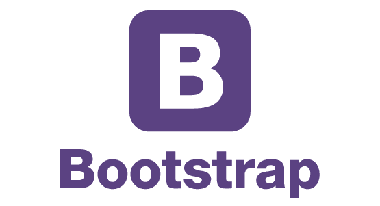
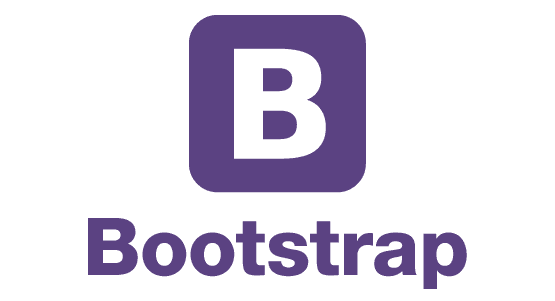
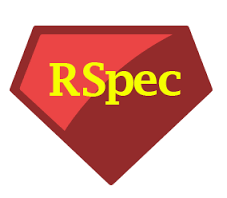
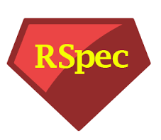

I'm an qualified teacher of languages and creator of educational resources who loves to travel and has lived in four different countries during my adult life. While I thoroughly enjoyed helping inspire kids and adults to learn a foreign language, I wanted a new challenge outside the classroom.
I've always been interested in how technology can enhance our lives but the nearest I'd got to coding was the summer I spent as a teenager trying to programme a chatbot for the Turing Test through the Personality Forge platform. I had so many ideas for software, particularly in the field of education, but was frustrated because I didn't have the skills to make them a reality. I kept thinking, "Wouldn't it be great if there was a website where you could do X" or, "If only someone made an app for Y" - and eventually, I realised that someone might as well be me.
Not one to do things by halves, I quit my job and enrolled on the Ironhack Full Stack Web Development Bootcamp in Barcelona, where I spent 2 months learning a range of front- and backend languages and frameworks. It was a risk and an incredible amount of hard work (10+ hours of coding every day and an enormous amount of content to learn), but I have enjoyed every second of it and am more certain than ever that coding is the right path for me.
So I am looking for a junior developer role, preferably full stack as I want to keep improving my skills in both front- and backend. I am based in Brighton, UK and am looking for the right company in the Sussex area so that I can make a positive contribution while also progressing as a developer. I'd love to hear from you if you feel I'd be a good fit for your team.
Hover for more details
I wanted to learn to code but was realistic enough to know that doing Codecademy tutorials in my spare time would not give me the skills I wanted. After careful research and thinking through the decision to become a developer (I’m adventurous, not impulsive!), I quit my job and moved to Barcelona for two months. I believe that if you’re going to do something, do it properly.
I went from zero coding experience to a full stack developer with a broad skillset in little over two months, through a lot of hard work and practice. Of course, I’m aware that I’m still at the beginning of my journey and there is still a lot more out there for me to learn (and that amount is growing every day). But if I can go from 'Hello world' to a functional, deployed Rails app in nine weeks, I can’t wait to find out how much further I can progress with the right company.
As a teacher, my job was to take potentially boring and/or complex topics and not only explain them in a way that made them easy to understand, but that made students want to understand them. The same skills that allowed me to break down the complexities of the German subjunctive for my students would also help me communicate the details of a software solution to a technophobic client or liaise with colleagues in different departments. As for presentations or sales pitches - well, high school teachers are used to the toughest crowds around.
At the Ironhack bootcamp, I got the chance to work with technologies on both sides, and I found it hard to pick a preference because I genuinely enjoy both. Ruby and SQL appeal to my love of logic and behind-the-scenes magic, but I also enjoy the design aspect and planning for a smooth user experience. Even if I eventually specialise in one side, I think it’s important to have an understanding of how both parts interact to form a coherent product.
Having been a co-author of several student textbooks, I understand how important it is to be open to suggestions or constructive feedback from editors and colleagues. Of course, when you’ve worked hard on a project and invested a lot of your time and creativity, it’s tempting to resist any changes. But ultimately, a thick skin, a sense of perspective and openness to new ideas allow me to contribute to a much better end product.
I know that a successful developer needs to be able to work well in a team but also independently, and I believe I can do both. I have worked closely within my department at a large school, collaborating effectively with colleagues. Prior to that, I was a remote-working freelance teacher, which required excellent levels of time management and self-motivation.
| zathorne@gmail.com | |
 |
www.linkedin.com/in/zoethorne |
 |
https://github.com/ZoeThorne |


 



 
